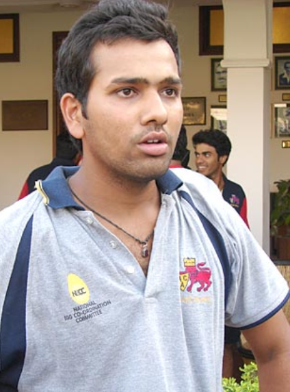
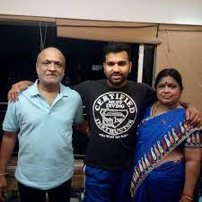
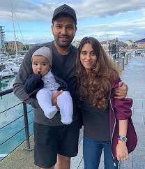
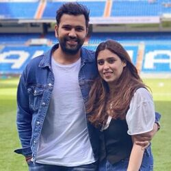
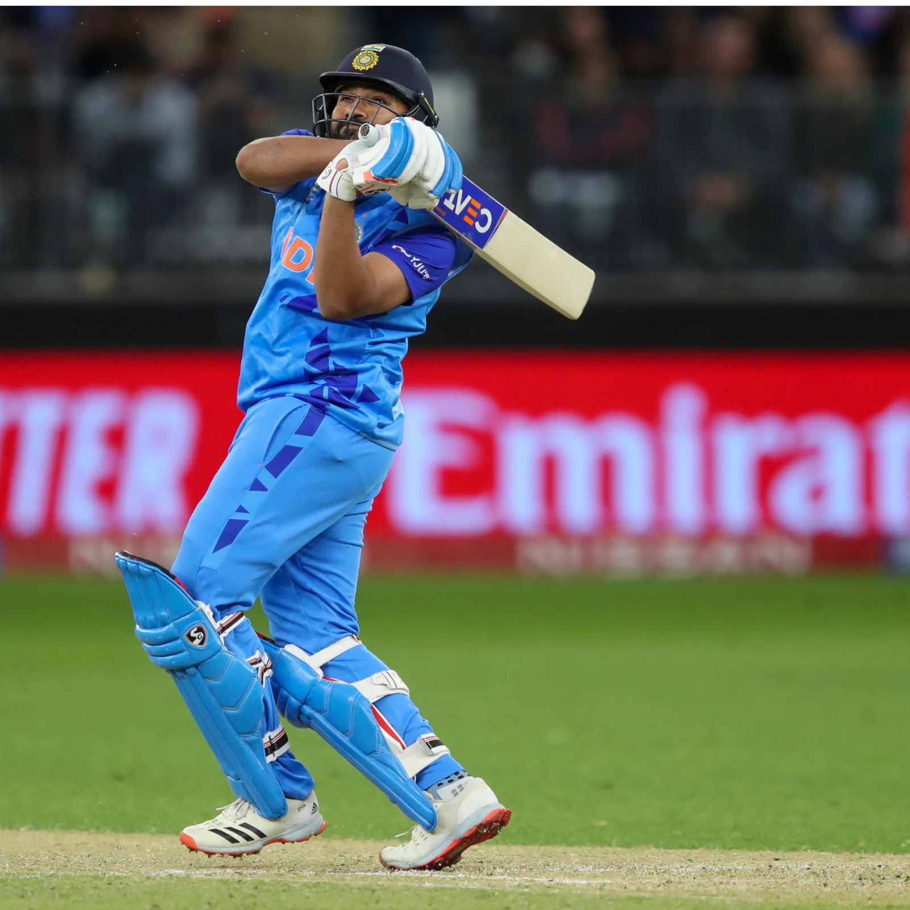

Rohit Gurunath Sharma (born 30 April 1987), is an Indian international cricketer and the current captain of India men’s cricket team in all formats. Considered one of the best batsmen of his generation and one of greatest opening batters of all time,[3] Sharma is known for his timing, elegance, six-hitting abilities and leadership skills. He plays as a right-handed batsman for India national cricket team in international cricket, Mumbai Indians in IPL and for Mumbai in domestic cricket. Rohit also captains Mumbai Indians and the team has won 5 titles under his leadership, the most by any team. With India, Sharma was a member of the team that won the 2007 T20 World Cup, and the 2013 ICC Champions Trophy, where he played in the finals of both tournaments.Outside cricket, Sharma is an active supporter of animal welfare campaigns. He is the official Rhino Ambassador for WWF-India and is a member of People for the Ethical Treatment of Animals (PETA). He has worked with PETA in its campaign to raise awareness of the plight of homeless cats and dogs in India
Early Life

Sharma was born on 30 April 1987 in Bansod, Nagpur, Maharashtra. His mother, Purnima Sharma, is from Visakhapatnam, Andhra Pradesh.[5] His father, Gurunath Sharma, worked as a caretaker of a transport firm storehouse. Sharma was raised by his grandparents and uncles in Borivali because of his father's low income. He would visit his parents, who lived in a single-room house in Dombivli, only during weekends.[6] He has a younger brother, Vishal Sharma.[7]

Personal Life

Sharma married his longtime girlfriend, Ritika Sajdeh on 13 December 2015. They have one child, a girl born on 30 December 2018. While the cricketer was on tour in Australia, his wife gave birth to their firstborn in Mumbai. He came back from Australia for his baby’s arrival but soon rejoined the team within a week.
The relationship between Rohit and Ritika started as friendship as the duo spent more and more time together, it evolved over time. Ritika used to manage Rohit's cricket engagement initially but the two started spending a lot of time together. As they got to know each other, Rohit and Ritika started dating and after a period of six years, the Indian batter surprised his lady love by proposing her at the Borivali Sports Club, Mumbai, a place where he began his cricketing career at the age of 11.

Playing Style

Sharma is an aggressive batsman but plays with style and elegance.[88][89] He is usually an opening batsman in limited overs cricket, but has played most of his Test cricket as a middle-order batsman.[90][91] In limited overs cricket, Sharma is widely recognised as one of the format's most outstanding batsmen.[92][93] And for his attacking batting and six hitting abilities he often referred as Hitman
The standout performer in both the limited overs series and the T20 series has been Rohit Sharma. Like Virender Sehwag before him, he is unstoppable once he gets going and like Viru he has an appetite for big hundreds. When Viru used to get out looking to hit another delivery out of the park, there used to be consternation around the ground, just like it is when Rohit gets out to a seemingly casual shot. If Rohit can turn his white ball exploits into red ball cricket, he will be the most destructive batsman in the world after Viv Richards and Virender Sehwag
Rohit scores big once he gets going as he is a natural stroke player. His tremendous shot-playing ability and power differentiates him from many of his fellow batters in the game. The Mumbai team's success on the field in many ways can be credited to the leadership skills of Rohit Sharma.
Certainly,pull shot is the one in which Rohit plays not just better than Virat Kohli but any current cricketer in the world. No one can deny this fact. The timing of Rohit's pull shot and how comfortably he hits makes everyone think that he has some extra time to play this shot beautifully.
Virat Kohli said "Rohit Sharma has the best pull shot in world cricket".If Pull shot is an art then Rohit Sharma is the artist.
Starting as an off-spinner, Rohit Sharma soon switched to batting and opening the innings. His consistent performance in domestic circuits earned him a place in the Indian team where he caught everyone’s attention first at the T20 World Cup 2007 and then in CB Series against Australia. Today he has scored almost 10,000 runs in ODIs with several centuries and 2 ODI double hundreds.